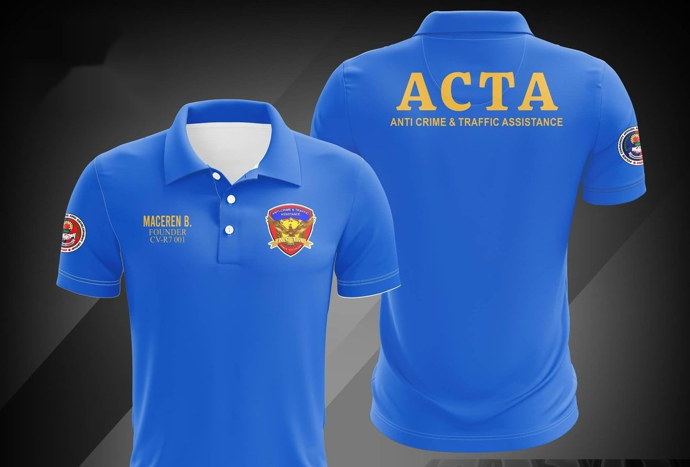
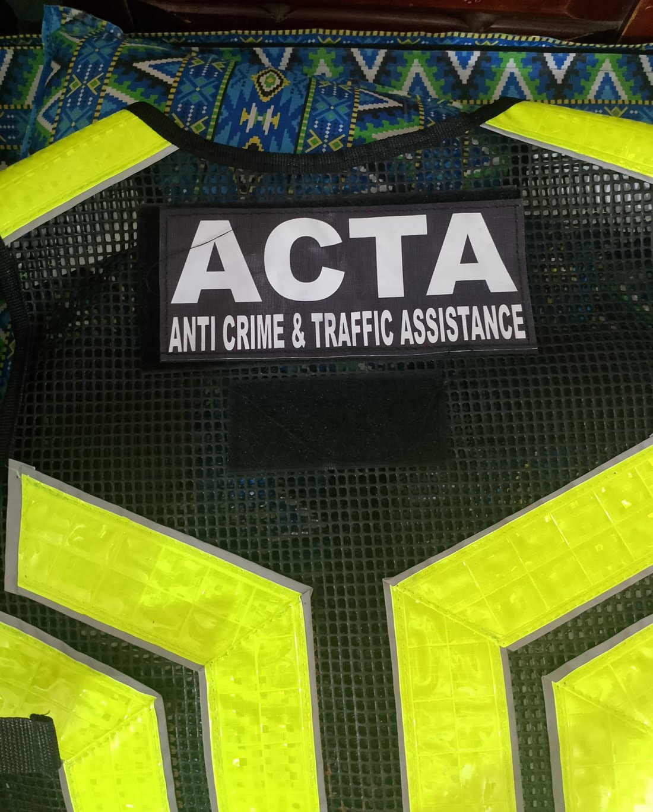
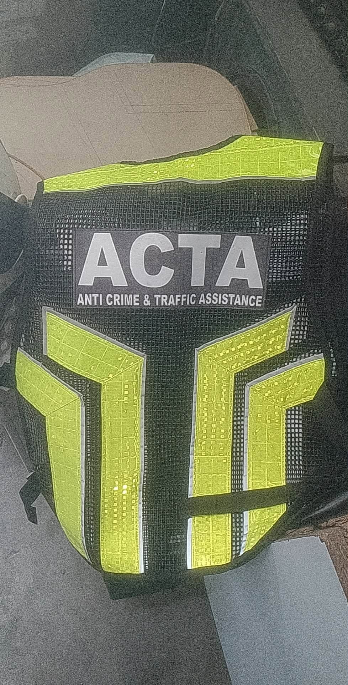
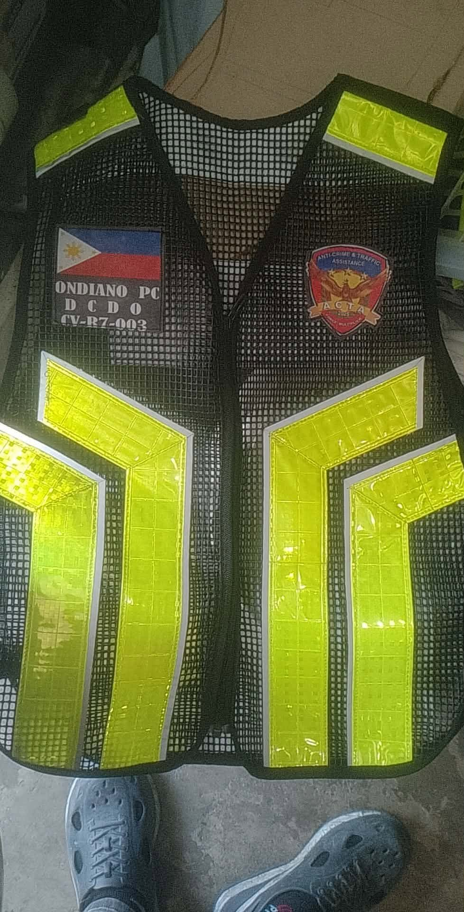
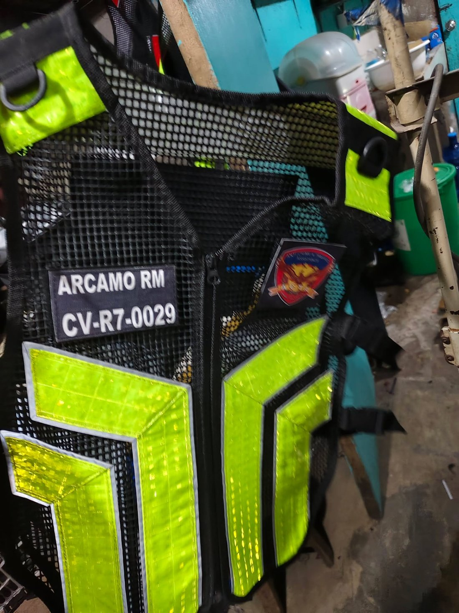
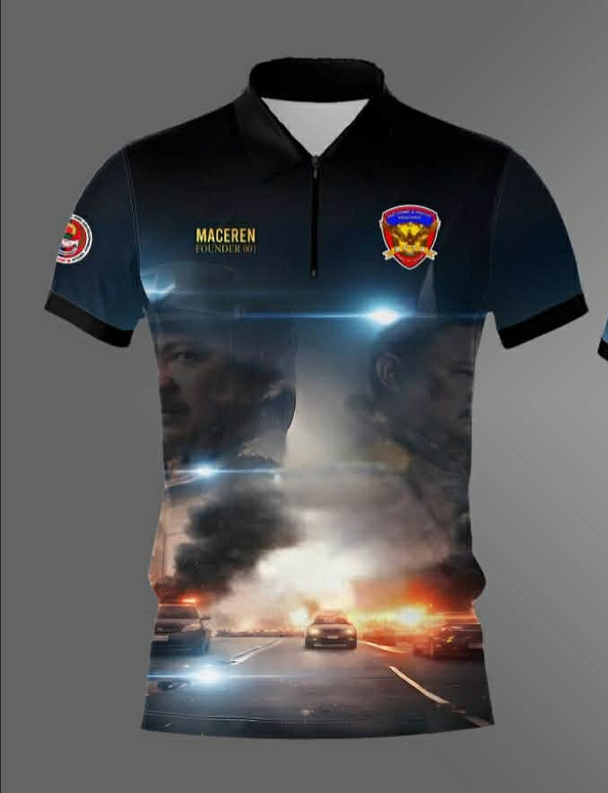
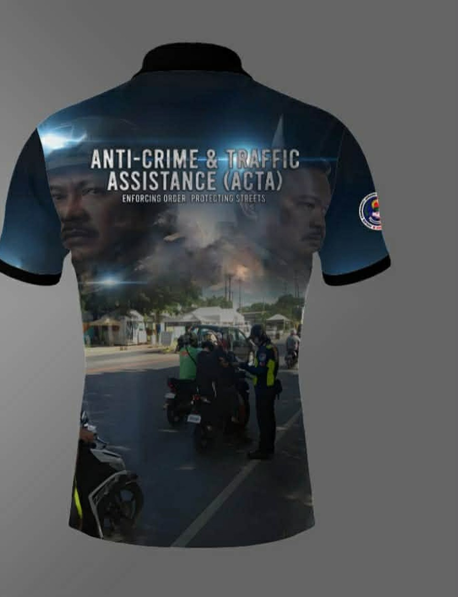

Traffic Assistance
Support traffic-management activities and help promote orderly movement in community areas.
COMMUNITY • SERVICE • PARTNERSHIP
Anti-Crime & Traffic Assistance (ACTA) is presented as a community-oriented force multiplier dedicated to assistance, public safety support and responsible service.
WHO WE ARE
Founded in 2025, ACTA — Anti-Crime & Traffic Assistance — is a community-based force multiplier program built around assisting communities, supporting traffic and public-safety activities, and working alongside police and local stakeholders.
This website uses the organization name, messaging and activities from ACTA's official materials. Additional administrative details such as hotline numbers, registration information and further chapter listings will be added as they are confirmed.
VISION
A safer, more secure and harmonious Philippines where citizens and law enforcement work together to prevent crime and promote public safety — building trust, mutual respect and collective responsibility for the well-being of all.
MISSION
To empower citizens to contribute to public safety by partnering with law enforcement agencies, promoting community engagement, and fostering a culture of vigilance and cooperation to prevent crime and address traffic issues.
LEADERSHIP
ACTA's founding leadership and first chartered chapter.

Regional Governor, The Fraternal Order of Eagles Philippines Eagles (TFOEPE) — CVR 11 · EY 26

WHAT WE DO
Built around practical assistance, community presence and coordination.
Support traffic-management activities and help promote orderly movement in community areas.
Provide visible community assistance and support efforts that contribute to safer public spaces.
Work with police, barangay and other stakeholders when participating in authorized community activities.
Participate in meetings, events, recognition activities and community initiatives.
FIELD REFERENCE

Police arrested John Elvis Catantan Gutobat on September 6 for fatally shooting Leo Leaño, 57, on the instruction of another man. Leaño's body was found in a mountainous area of Cebu City on September 3 — Gutobat is the third suspect arrested in the case.
Cases like this are why ACTA exists — to build community vigilance and support public-safety coordination with local police.
Source: Arnold Y. Bustamante / SunStar Cebu Read the full story at SunStar Cebu →
Mayeth Tacocong Gatchalian was arrested in Compostela, Cebu on August 27 for allegedly recruiting three women for fake housekeeping jobs in Armenia. The women were intercepted at Mactan-Cebu International Airport just before departure, and human trafficking and illegal recruitment charges have since been filed.
Human trafficking preys on hope for a better life — ACTA's community coordination and public-safety partnerships help spot and report cases like this.
Photo: Jovannie Lambayan / Philstar.com Read the full story at Philstar.com →
A trailer truck with brake failure collided with two motorcycles on B. Suico Street, Barangay Tingub, Mandaue City on the night of April 11, killing two women and critically injuring another rider.
Tragedies like this are why ACTA supports traffic-management activities and promotes orderly, safer movement in community areas.
Source: Futch Anthony Inso / Cebu Daily News Read the full story at Cebu Daily News →
The Traffic Enforcement Agency of Mandaue (TEAM) apprehended 29 motorcycle riders for counterflowing along J.P. Rizal Street, Barangay Basak, on March 4 — violations enforcers say frequently cause accidents and road rage.
This is exactly the kind of everyday risk ACTA's traffic assistance volunteers help prevent through visibility and public education.
Source: Mary Rose Sagarino / Cebu Daily News Read the full story at Cebu Daily News →
A man attacked his niece's partner with a kitchen knife over a personal dispute in Barangay Manatad, Sibonga on September 6 — the niece, a public school teacher, was also wounded trying to stop the assault. Police arrested the suspect the next day.
Everyday disputes can turn violent fast — ACTA's community presence and coordination with barangay and police help de-escalate and respond quickly.
Source: Elikha Joy Janaban / Cebu Daily News Read the full story at Cebu Daily News →
A 60-year-old man was struck with a small scythe by an acquaintance during a heated, alcohol-fueled argument at Dalaguete's public market on September 7. He suffered wounds to his face and wrist; the suspect fled and remains at large.
Public spaces should feel safe — ACTA's visible community presence supports efforts to prevent and quickly report incidents like this.
Source: Elikha Joy Janaban / Cebu Daily News Read the full story at Cebu Daily News →
Three alleged drug dealers were arrested in separate operations on July 21 by PDEA and police — two in a buy-bust in Compostela, Cebu, and a third in Tagbilaran City, Bohol. Authorities recovered more than ₱1 million worth of shabu across the operations.
Cases like this show why community reporting and cooperation with law enforcement remain essential in the fight against illegal drugs.
Photo: Contributed / SunStar Cebu Read the full story at SunStar Cebu →GEAR
Official ACTA uniform and gear designs.







IN THE FIELD
Selected moments from the supplied ACTA photo collection.


PARTNERSHIP
The supplied photographs show ACTA members participating in meetings and visits involving police personnel, public offices, barangay/community settings and other local events.
See the Leadership section above for ACTA's founding officer and Corporate Adviser from the Lapu-Lapu City Police Office.
PHOTO ARCHIVE
Tap any image to view it larger.
IDENTITY
For God — integrity, honesty, transparency and moral uprightness in every aspect of the organization.
For People — compassion, kindness, empathy and service to humanity.
For Country — patriotism, national pride and a commitment to the country's progress.
For Environment — stewardship, responsible use of resources and protection of the environment.
ACCOUNTABILITY
Standards of discipline for ACTA members and officers.
a. Falsification of documents detailing personal records, or misrepresentation of any information concerning a person's circumstances and qualifications.
Offense — Expulsionb. Engaging or conniving with anyone to defraud the organization, or dealing in anomalous transactions.
Offense — Expulsionc. Forging the signature of a fellow member, officer, or anyone within the organization for personal gain or benefit.
Offense — Expulsiond. Engaging in another task, obligation or venture that is in conflict with the interest of the organization.
1st offense — Written Warning · 2nd offense — Expulsiona. Any act constituting disrespect or disregard of authority, including resistance, insult, threat, challenging to fight, intimidation, slander, character assassination, or assault of superiors and officers of the organization or any of its agents. The maximum penalty may be imposed.
Offense — Expulsionb. Failure to cooperate with an internal investigation.
1st offense — Written WarningGET INVOLVED
ACTA is a volunteer-driven, community-based organization. Membership is open to individuals committed to public safety, traffic assistance and community service, working alongside barangay officials, local police and other stakeholders.
A dedicated member login area — for IDs, announcements and chapter resources — is planned for a future update. For now, use the steps below or the Contact section to inquire about joining.
Reach out to the Founding Chapter in Lapu-Lapu City to ask about membership, requirements and upcoming orientation schedules.
Contact ACTACONNECT WITH ACTA
For official contact information, membership requirements, chapter details and authorized activities, please provide the organization's confirmed details before publication.